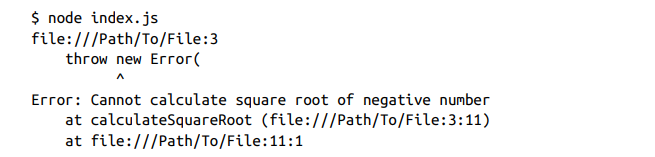
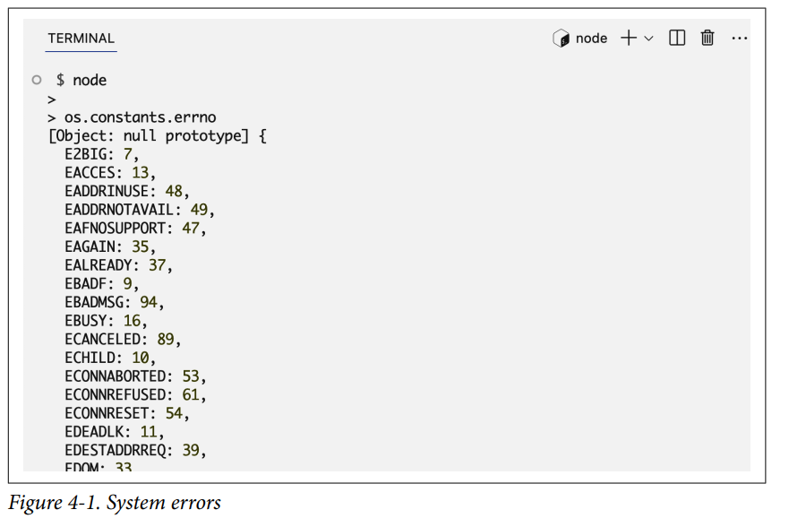
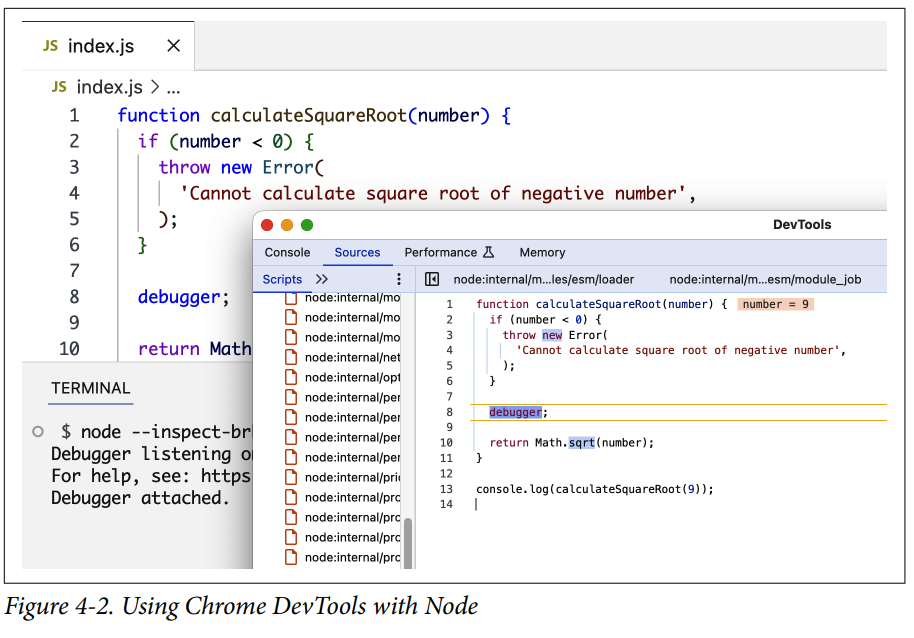

Errors and Debugging¶
En Node los objetos error son importantes porque nos dan contexto y detalles de la existencia de problemas, buenos manejadores de errores hacen programas mas seguros. Primero hablaremos del lanzamientos(throwing) y captura (catching) de errores y luego discutiremos los diferentes tipos de errores. Y cómo se ve el manejo de errores en capas. Entonces nosotros exploraremos depurar código Node y discutiremos algunas medidas preventivas que podemos usar para reducir errores potenciales.
Throwing and Catching Errors¶
Un error es una instancia de un objeto de la clase Error. A veces necesitarás crear tus propios objetos de error, como este:
¿Qué exactamente haces con un objeto de error?
Bueno, independientemente del tipo de error y si tú lo creaste o es integrado, siempre que estés en un lugar del código donde una condición no debería ocurrir, necesitas señalar los detalles de ese problema a quien sea que esté usando tu código.
Por ejemplo, supongamos que queremos crear una función para calcular la raíz cuadrada de un número. Una restricción que debería tener dicha función es bloquear cualquier operación que intente usar la función con un número negativo, ya que no existe raíz cuadrada para un número negativo.
Ese caso es un error de entrada del usuario que se espera, y si ocurre, la función debería proporcionar una señal de que se está usando incorrectamente.
Una forma simple de hacer esto es lanzando un error con throw:
Si se produce un error, la operación actual se detendrá por completo. Al producirse cualquier error en Node, el proceso se bloqueará y finalizará. Esto es lo que sucede al ejecutar este código:

Esto puede parecer incorrecto. ¿Por qué bloquear una aplicación completa debido a un simple uso erróneo de una sola función?
La respuesta simple aquí es que es un problema que no debería ser ignorado y que debe manejarse de alguna forma. Ignorar errores podría llevar a consecuencias no deseadas y compromete la integridad de la aplicación. Una función que se llama con la entrada incorrecta podría tener datos incorrectos propagados a través de toda la aplicación. Eso realmente no es bueno. En algunos casos, incluso podría causar una vulnerabilidad de seguridad. En este simple ejemplo, una entrada no validada podría ser el camino para un ataque explotador contra la aplicación.
Para errores relacionados con el entorno de la aplicación, no manejarlos podría llevar a fugas y agotamiento potencial de recursos del sistema. Es demasiado riesgoso ignorar cualquier error. En tus módulos principales, siempre debes lanzar errores cuando estés en una condición que signifique un problema. Es tu señal de que un problema debe ser reconocido y manejado apropiadamente o hacer que la aplicación colapse.
Ahora, los módulos que usan tus módulos principales podrían hacer una excepción para ciertos errores. Por ejemplo, un módulo que usa tu función calculateSquareRoot podría decidir implementar una excepción para cuando la función se llame con un número negativo. Eso se puede hacer capturando el error.
Siempre que escribas código que use otro código (como llamar a una función), debes siempre recordar que ese otro código podría lanzar errores. Como usuario de ese código, puedes decidir qué hacer con esos errores. Lo haces capturando el error y manejándolo de alguna forma.
Por ejemplo, supongamos que decidiste que cuando calculateSquareRoot se llame con un número negativo, solo debe imprimir una advertencia, no salir de toda la aplicación. Así es como lo haces:
calculateSquareRoot con un número negativo no rompera el proceso. Este error ahora es una excepción manejada.
El problema es que la excepción manejada aquí no es solo el error por un argumento de número negativo. Es cualquier error dentro de la función calculateSquareRoot. Si la función lanza cualquier otro error, todos serán capturados por el try...catch e ignorados en este nivel también. Deberíamos hacer excepciones solo para los errores que conocemos. Cualquier error desconocido debería aun ser lanzado.
Note
El texto original dice:
"Si la función lanza cualquier otro error, todos serán capturados por el try...catch e ignorados en este nivel también."
La palabra "ignorados" aquí es confusa porque suena como si el error simplemente no se detectara. Pero en realidad sí se detecta — el catch lo atrapa. El problema es lo que pasa después de que lo atrapa.
Como el catch no distingue entre errores, hace lo mismo con todos: El catch recibe cualquier error que ocurra dentro del try, pero solo sabe manejar el error que se tenía previsto — en este caso, "Número negativo". Si llega un error diferente, como un TypeError causado por un bug, el catch lo recibe sin saber qué hacer con él y ejecuta su código de todas formas, por lo tanto, el error queda ignorado — nunca se reporta, nunca se relanza, simplemente desaparece:
try {
calculateSquareRoot(4);
} catch (error) {
return 0; // ← esto se ejecuta para CUALQUIER error
}
Ahora imagina que dentro de calculateSquareRoot hay un bug — por ejemplo, intentas llamar un método que no existe en un número:
function calculateSquareRoot(n) {
if (n < 0) throw new Error("Número negativo"); //(1)!
return n.toUpperCase(); // bug: los números no tienen toUpperCase
}
- Si el número es negativo, lanzamos un error manualmente.
Eso lanza un TypeError. Un TypeError es el error que JavaScript lanza automáticamente cuando intentas hacer algo con un valor que no es compatible con esa operación — como llamar .toUpperCase() en un número, o acceder a una propiedad de null. No es un error que tú lanzaste con throw, sino uno que JavaScript mismo detectó porque algo en el código no tiene sentido.
Entonces si llega ese TypeError, el catch lo recibe, ejecuta return 0, y el programa continúa. El TypeError nunca apareció en consola, nunca fue reportado, nunca fue relanzado. Simplemente entró al catch y desapareció. A eso se refiere con "ignorado" — no es que no se detectó, sino que se detectó y se descartó sin hacer nada útil con él.
La solución es que dentro del catch preguntes si el error es el que tú conoces. Si no lo es, lo relanzas con throw error:
try {
calculateSquareRoot(4);
} catch (error) {
if (error.message === "Número negativo") {
return 0; // este lo conozco, lo manejo yo
}
throw error; // este no lo conozco, lo relanza
}
Cuando haces throw error, el error sale del catch y sube un nivel — es decir, va al try...catch que esté por encima de este en el código. Si no hay ninguno, el programa crashea y el error aparece en consola. Eso es exactamente lo que quieres, porque significa que hay un bug real que necesitas ver y arreglar. El error ya no queda "ignorado".
Por eso una frase más clara que la del texto sería:
"Si la función lanza cualquier otro error — como un
TypeErrorque JavaScript genera automáticamente cuando algo en el código no tiene sentido — todos serán capturados por el try...catch y descartados silenciosamente, ocultando bugs reales. Por eso los errores desconocidos deben relanzarse conthrow error, para que suban un nivel y no queden enterrados."
Para hacer eso, necesitamos una forma de manejar el error condicionalmente. Necesitamos verificar el tipo de un error. Hablemos de los tipos de errores a continuación.
Types of Errors¶
Los distintos tipos de errores suelen tener diferentes estrategias de manejo. Conocer estos tipos y sus causas subyacentes ayuda a identificar qué ocurre cuando aparecen. Los tipos de errores más importantes en Node son los errores estándar(Standard Errors), los errores del sistema(System Errors) y los errores personalizados(Custom Errors). Analicemos algunos ejemplos.
Standard Errors¶
Los errores estándar son errores integrados que proporciona JavaScript. El motor de JavaScript los genera cuando encuentra alguna condición inesperada que impide el funcionamiento normal del programa. Por ejemplo, cuando se utiliza una sintaxis incorrecta, se hace referencia a una variable antes de declararla o se utiliza una función de forma inválida.
Las principales clases de error estándar en JavaScript son: SyntaxError, ReferenceError, RangeError, and TypeError
SyntaxError¶
Este es el tipo de error que se produce cuando intentamos ejecutar código que no es JavaScript válido. Lo obtenemos si usamos una palabra clave reservada, declaramos una variable con un nombre no válido, colocamos incorrectamente una coma, un corchete o un paréntesis, o hacemos cualquier otra cosa que no cumpla con las reglas sintácticas del lenguaje.
> console.log('Hello world';
console.log('Hello world';
^^^^^^^^^^^^^
// Uncaught SyntaxError: missing ) after argument list
>
ReferenceError¶
Este es el tipo de error que se lanza cuando intentas usar una variable que no ha sido declarada o no está en el scope actual:
RangeError¶
Este es el tipo de error que se lanza cuando intentas usar un valor que no está dentro del rango permitido impuesto por un límite de implementación o un límite de memoria —por ejemplo, si usas un método con un argumento que no está dentro del rango aceptado:
(123.456).toFixed(101); // (1)!
// Uncaught RangeError: toFixed() digits argument
// must be between 0 and 100
toFixed()solo acepta argumentos entre 0 y 100. Si pasas 101, JavaScript lanza unRangeErrorautomáticamente.
Llama a una funcion recurciva sin una condicion exit() podria generar un RangeError
TypeError¶
Este es el tipo de error que se lanza cuando intentas usar un valor de un tipo inesperado en cualquier lugar donde se espera un tipo específico. Por ejemplo, el método thing.toUpperCase() espera que thing sea una cadena de texto, pero si intentas usar ese método con un número, obtendrás un error de tipo.
let thing = 42;
console.log(thing.toUpperCase());
// Uncaught TypeError: thing.toUpperCase is not a function
Otros ejemplos de TypeError incluyen intentar modificar una variable constante, acceder a propiedades de objetos nulos e indefinidos y usar la palabra clave new con funciones que no son constructoras, entre otros casos.
Note
Estos son los errores estándar más comunes. Hay algunos más como URIError, que está relacionado con el manejo de URIs, y EvalError, que existe solo por compatibilidad y ya no se lanza por JavaScript moderno.
System Errors¶
Los errores del sistema (System Errors) en Node se lanza cuando ocurre algo inesperado a nivel del sistema. Estos son basicamente los problemas que surgen debido al entorno y al sistema operativo donde se ejecuta una aplicación Node; por ejemplo, si se intenta leer o escribir en un archivo que no existe, usar un puerto de red que ya está en uso, enviar datos a través de un socket cerrado, etc.
Estos errores tienen códigos específicos que puedes consultar para entender por qué ocurren. Aquí tienes algunos códigos de error comunes del sistema:
ENOENT-
Se lanza cuando tratas de acceder a un archivo o directorio que no existe.
EACCES-
Se lanza cuando una operación no tiene los permisos adecuados. Por ejemplo, si intentamos escribir en un archivo de solo lectura.
EADDRINUSE-
Se lanza cuando un servidor HTTP (o TCP) no se inicia porque la dirección que intenta usar ya está en uso.
ECONNREFUSED-
Se produce cuando se intenta establecer una conexión con un servidor que no está en corriendo.
Otros errores de sistema comunes incluyen ETIMEDOUT (operación expiró), ECONNRESET (conexión reiniciada por el peer), ENOTFOUND (entidad no encontrada), EPERM (operación no permitida), y muchos más. Si el código de error se ve como ESOMETHING, usualmente es un código de error de sistema.
Puedes ver la lista completa de errores de sistema usando os.constants.errno, como se muestra en la Figura 4-1.

Tip
Estos códigos de error de sistema son códigos POSIX. POSIX (Portable Operating System Interface) es un conjunto de estándares (basados en el SO Unix) que se usan para mantener la compatibilidad entre diferentes sistemas operativos.
Custom Errors¶
Los custom error en Node son errores generados por ti, el desarrollador para manejar espcificas condiciones y escenarios de tu codigo. El error que lanzamos para la raíz cuadrada de un número negativo es un error personalizado genérico.
Tip
Custom errors are also known as user-specified errors (user in this case refers to the developer, not the end user of the application).
Trabajarás la mayor parte de tiempo con errores personalizados que con otros tipos. Los creamos para manejo de errores específico y para agregar contexto adicional o propiedades relevantes a la lógica de nuestra aplicación. Por ejemplo, un custom UserNotFoundError podría usarse cuando algo intenta acceder al registro de un usuario que no está en el sistema, o un TransactionFailedError podría lanzarse cuando una transacción falla al completarse exitosamente. No es raro que una aplicación Node tenga decenas, si no cientos, de errores personalizados.
Aunque una instancia genérica de la clase Error es un error personalizado, deberías dar a tus errores personalizados sus propias clasificaciones. Podemos hacer eso extendiendo la clase Error, y luego instanciando objetos de esa clase extendida:
error instanceof ValidationErrorvalida si el error fue creado con tu clase específica.- Cualquier otro error en el runtime, lo vuelve a lanzar para no ocultarlo silenciosamente
Tip
Mantén la extensión de la clase Error a un solo nivel, y no crees un árbol de errores. Si tu código está dividido en diferentes estructuras (dominio, api, app, etc.), puedes categorizar tus errores en diferentes módulos bajo estas estructuras. No importa cómo organices tus errores personalizados, ¡sé lo más detallado posible al nombrarlos!
¿Hay una condición donde no se puede establecer una conexión a la base de datos? Lanza un DatabaseConnectionError.
¿Hay una condición donde no se pudo encontrar el registro de un usuario usando un ID único? Lanza un CouldNotFindUserFromIdError.
Fijate cómo usé nombres basados en sustantivos y basados en verbos en estos dos ejemplos. Elige el que prefieras.
Observe cómo en este ejemplo, después de crear la excepción para el error conocido y esperado, se vuelven a lanzar todos los demás errores. Esto es muy importante, así que hablaremos de ello en la siguiente sección.
Assertion Errors
Otra categoría de errores en Node son los errores de afirmación (assertion errors). Son errores específicos usados principalmente en entornos de testing y desarrollo. Se usan normalmente cuando el código espera que algo sea verdadero pero lo encuentra falso.
Los errores de afirmación también se usan comúnmente para escribir tests y cuando depurando y validando suposiciones durante el desarrollo. Si una afirmación falla en cualquier lugar del código, significa que probablemente hay un bug* o un malentendido que lleva hasta ese punto de falla, que necesita ser abordado antes de lanzar cualquier cambio de código.
Los errores de afirmación en Node se lanzan usando el módulo assert, que proporciona un conjunto simple de pruebas de afirmación como las siguientes:
-
assert(value[, message])
¿Es el valor verdadero? -
assert.equal(actual, expected[, message])
¿El valor actual es igual al valor esperado? -
assert.doesNotMatch(string, regexp[, message])
¿El valor string coincide con el patrón regexp?
Cuando se llama a un método de afirmación, evalúa su condición específica. Si la condición no se cumple, el método de afirmación lanza un AssertionError que detalla la naturaleza del fallo.
Si la condición se cumple, el programa continúa la ejecución normalmente.
Hay muchos otros métodos de afirmación para varias condiciones. Consulta la página de documentación de Node para el módulo assert.
Veremos ejemplos de cómo usar este módulo en el Capítulo 8.
Layered Error Management¶
Supongamos que tienes módulos A, B y C, donde el módulo B usa el módulo A, y el módulo C usa el módulo B. Cuando pensamos en gestión de errores, necesitas recordar este tipo de estructura en capas.
Con el entendimiento de tipos de errores y cómo crear objetos de error personalizados, ahora podemos lanzar errores distintos para distintas condiciones y darle a las capas superiores que usan nuestros módulos principales la oportunidad de hacer excepciones para estos errores específicos.
Sin embargo, después de hacer estas excepciones, un bloque catch siempre debería terminar con una llamada throw error para relanzar cualquier error desconocido:
Si no reenviamos el objeto de error (que se desconoce una vez que se han gestionado las excepciones conocidas), lo estaríamos ignorando sin más y haciendo que la aplicación se ejecutara en un estado inestable o incorrecto, sin indicar (a todas las capas superiores) que algo ha fallado en esta capa. Esto también complica mucho la depuración de problemas, ya que se perdería el contexto del error.
Al volver a lanzar el error, lo propagas a las capas superiores. No volver a lanzar el error equivale, básicamente, a ocultarlo a las capas superiores.
Existe otra forma de gestionar los errores. En lugar de lanzarlos, podemos pasarlos a otras partes de la aplicación que utilizan nuestros módulos principales y dejar que cualquiera de estas partes los gestionen o los reenvíen de nuevo
El método de reenvío de errores es comunmente utilizado en la programación asíncrona y basada en eventos, donde un error que se produce en una función no se gestiona inmediatamente dentro de esa función, sino que se envía junto con cualquier dato a la siguiente función de la secuencia.
El estilo de callback «error-first» que se discutido en el capítulo 3 es, básicamente, una forma de realizar el reenvío de errores. Cuando se produce un error dentro de una función, este se empaqueta y se pasa como primer argumento al siguiente callback. Esto permite que la siguiente función de la secuencia
compruebe si hay algún error y decida cómo gestionarlo:
Las funciones basadas en promesas son otra forma de reenviar errores. Un error dentro de la implementación de la promesa se reenvía mediante el método reject:
- En
promisese usa elthen()obtener al promesa resuelta y elcatch()para capturar los errores.
Sin embargo, no necesitamos promesas ni callbacks para implementar el reenvío de errores. Podemos hacerlo simplemente haciendo que las funciones devuelvan ya sea datos (éxito) o error (fracaso), o incluso ambos (éxito parcial). Esto se puede hacer unificando el retorno en un objeto con una propiedad de error y datos, o usando un enfoque más simple de devolver ya sea un objeto de datos o un objeto de error. Esto último es un poco complicado, ya que cada función tendría que devolver dos tipos diferentes. Recomendaría este último enfoque solo si el proyecto Node utiliza TypeScript, que añade tipado estático a JavaScript. En el capítulo 10 veremos los conceptos básicos de TypeScript para Node.
Aquí tienes un ejemplo de una función que unifica el retorno en un objeto:
Sin embargo, todas las partes de la aplicación necesitan manejar los errores o reenviarlos, del mismo modo, sin reenvío de errores, cada parte de la aplicacion necesita manejarlos o lanzarlos. La gestión de errores debe ser un estilo que se aplique en toda la aplicación.
Depuración en Node¶
Cuando un problema de código necesita ser investigado, hay múltiples formas de hacer la depuración en Node. La forma más simple es registrar información alrededor del problema para entender lo que está sucediendo. Para empezar, se pueden usar simples declaraciones console.log para descubrir exactamente dónde está ocurriendo el problema (en caso de que el stack del error no haya sido útil):
Si no ves el segundo mensaje de log, significa que app.init() tiene un problema. Se puede usar más logging para imprimir datos, verificar expectativas y rastrear cómo cambian las cosas. Es una forma simple pero poderosa para identificar rápidamente problemas en un entorno de desarrollo.
Para una depuración más completa, Node tiene una utilidad de depuración incorporada en línea de comandos que se puede iniciar usando el argumento inspect:
Este comando inicia tu aplicación Node con un inspector adjunto, permitiéndote pausar la ejecución, avanzar paso a paso por el código e inspeccionar variables en tiempo de ejecución. Puedes establecer puntos de interrupción directamente desde tu código agregando la declaración debugger;, que hará que la ejecución se pause cada vez que se alcance ese punto.
El depurador incorporado es ciertamente útil, pero es limitado. Hay una opción más potente y completa. Puedes usar las DevTools del navegador Chrome para depurar aplicaciones Node tan fácilmente como depuras aplicaciones web. Todo lo que tienes que hacer es iniciar el proceso Node con la bandera --inspect:
También puedes usar la bandera --inspect-brk para pausar al inicio del script depurado. Después de eso, puedes conectarte al proceso Node en ejecución usando la página chrome://inspect de Chrome (ver Figura 4-2). El proceso Node en ejecución se listará allí, y cuando hagas clic en él, tendrás todo el poder de DevTools para usar en tu código Node: el depurador, el perfil de rendimiento, el inspector de memoria y la consola en tiempo real.

Node también tiene un perfilador de rendimiento incorporado que puedes ejecutar con la bandera --prof. Este muestrea la pila a intervalos regulares durante la ejecución del programa y registra los resultados de estas muestras, junto con eventos importantes de optimización.
Adicionalmente, Node tiene múltiples banderas de tracing que se pueden usar para imprimir información adicional en los stacks de error. Puedes verlas junto con lo que hacen en la salida de node --help:
Beneficio de nombres descriptivos
Otro beneficio de usar nombres claros y descriptivos para los objetos en tu código (especialmente funciones) es que ayuda con la depuración. Los objetos bien nombrados en los stack traces y registros de error facilitan la identificación de dónde y por qué podría estar ocurriendo un problema.
Medidas Preventivas¶
Si bien lidiar con errores en general es inevitable, hay algunas herramientas y prácticas que puedes adoptar para reducir las posibilidades de tener que enfrentar errores desconocidos.
Herramientas de Calidad de Código¶
Cuando escribes una función que recibe entradas, lo primero que debes hacer es asegurarte de que las entradas sean lo que esperas que sean. ¿Son del tipo correcto? ¿Están en el formato correcto? ¿Están en el rango adecuado? Lanza errores si no lo están.
Usar TypeScript con Node puede al principio sentirse como hacer las cosas mucho más complicadas, pero en realidad, los beneficios que obtienes son mucho mayores que los pequeños inconvenientes. TypeScript señalará problemas en tu código antes de que el código siquiera se ejecute. ¿Pasaste el tipo de argumento incorrecto a una función? ¿Cometiste un error tipográfico al acceder a una propiedad de un objeto? ¿Llamaste a un método que no existe? TypeScript señalará todos estos problemas, y muchos más, de inmediato. TypeScript también puede ayudarte a escribir código de gestión de errores de una manera mucho mejor.
El linter ESLint también puede ayudar a encontrar problemas en tu código antes de que se ejecute. Puedes usarlo para identificar patrones que conducen a bugs, y tiene muchas otras características para hacer cumplir el estilo de código y las mejores prácticas. ESLint también tiene muchos plugins poderosos que pueden extender su alcance y hacerlo funcionar con muchas bibliotecas y frameworks.
Ampliaremos más sobre TypeScript y ESLint en el Capítulo 10.
Objetos Inmutables¶
Un objeto verdaderamente inmutable no puede ser cambiado una vez que es creado. Cualquier actualización debe crear nuevos objetos en su lugar. Usar estructuras de datos inmutables (de una biblioteca como Immutable.js, por ejemplo) te ayuda a evitar una tonelada de problemas potenciales que provienen de cambiar datos sin intención. Incluso conceptos simples de inmutabilidad en JavaScript mismo, como usar const en lugar de let, congelar objetos y usar propiedades de solo lectura, son métodos muy útiles para evitar muchos problemas.
Testing¶
Todo el código tiene que ser probado de una forma u otra. Probamos el código manualmente todo el tiempo, pero no podemos probar manualmente todos los casos después de cada cambio. Un pequeño cambio en cualquier parte podría causar bugs en lugares que nunca esperarías. Es por eso que automatizar las pruebas escribiendo código que prueba tu código es realmente importante.
Escribir tests hoy en Node es más fácil que nunca. Node tiene módulos incorporados para testing y aserciones. El módulo node:test proporciona una forma de organizar tus tests y describirlos. El módulo node:assert proporciona métodos de aserción para implementar la lógica de los tests y lanzar errores de aserción cuando las expectativas no se cumplen.
El testing de código en Node es el tema del Capítulo 8.
Revisiones de Código¶
Esto no necesita decirse, pero un proceso sólido de revisar todo el código en un proyecto ayuda enormemente a encontrar problemas temprano y a encontrar mejores formas de hacer las cosas. Yo diría que cada línea de código debería ser revisada por al menos dos desarrolladores.
Resumen¶
Muchos problemas pueden ocurrir durante la ejecución de un programa Node. Algunos problemas están fuera de nuestro control, mientras que otros pueden y deben ser manejados. Los problemas en Node se presentan con objetos de error que son incorporados o personalizados por los desarrolladores. Los módulos principales lanzan estos objetos de error, y los módulos que usan módulos principales pueden capturar objetos de error y manejarlos si así lo deciden.
Cuando ocurre un error, un proceso Node se bloqueará y finalizará. Esto es algo bueno porque no quieres que un programa continúe ejecutándose en un estado desconocido. Sin embargo, si se espera un error, el programa no necesita bloquearse. Una excepción es básicamente un error para el cual hicimos una excepción para no detener todo el programa.
Hay varios tipos de errores en Node. Tenemos errores estándar de JavaScript, errores del sistema, errores personalizados y errores de aserción.
En una estructura de aplicación en capas, los errores necesitan propagarse entre las capas. Esto se puede hacer usando el método throw, o con un reenvío más estructurado de objetos de error.
Se pueden usar mensajes de log simples para hacer depuración básica en Node. Node tiene una utilidad de depuración incorporada en línea de comandos, y Chrome DevTools también se puede usar para una depuración más completa de aplicaciones Node.
Hay algunas herramientas y prácticas que se pueden usar para reducir las posibilidades de tener que lidiar con errores. Herramientas como TypeScript y ESLint son muy poderosas en ese dominio. Validar entradas, escribir tests, usar estructuras de datos inmutables y realizar revisiones de código son buenas prácticas a considerar para ese propósito también.
En el próximo capítulo, hablemos sobre la gestión de paquetes en Node y aprendamos más sobre las características del gestor de paquetes de Node.